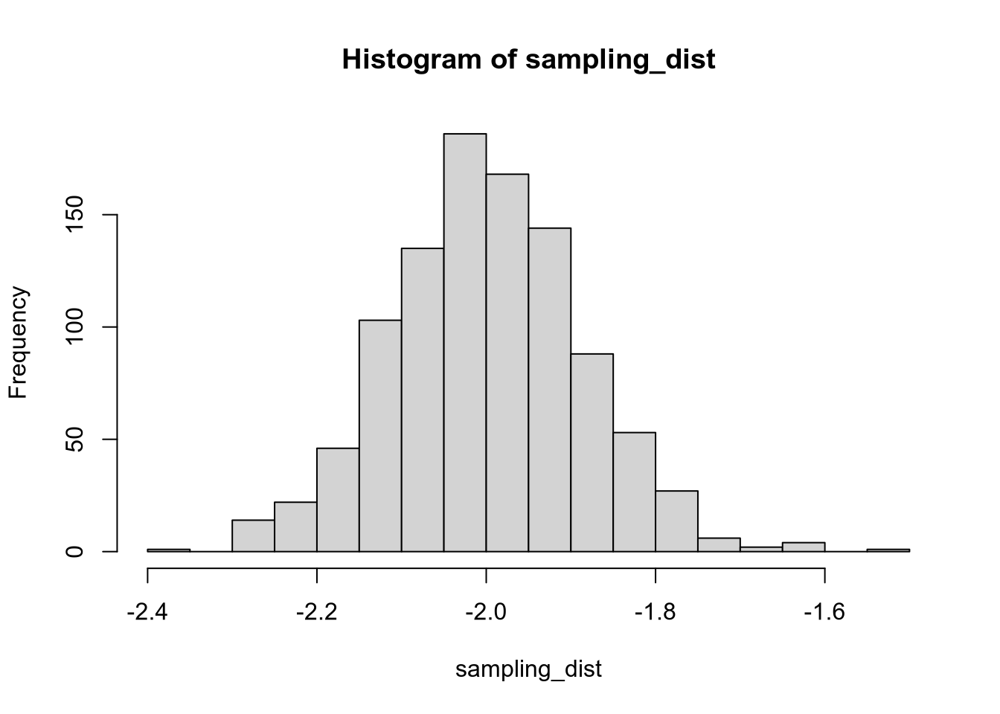

2 Principles of Programming
It may seem strange to begin a statistics class with two weeks on programming. It is strange. Here is why I have made this strange choice.
First, as a working social scientist, most of the time you spend on data analysis won’t be on the analysis part. It’ll be on obtaining and cleaning the data, to get it in a form that makes sense to analyze. Good programming skills will let you spend less time cleaning data and more time publishing papers.
Second, even if you don’t want to develop good programming habits, journals are going to force you to. Every reputable political science journal requires that you provide replication scripts, and some of the best (e.g., American Journal of Political Science) have begun auditing the replication materials as a condition of publication. Better to learn The Right Way now when you have lots of time than to be forced to when you’re writing a dissertation or on the market or teaching your own courses.
Third, while I feel embarrassed to invoke the cliché that is Big Data, that doesn’t mean it’s not a real thing. Political scientists have access to more data and more computing power than ever before. You can’t collect, manage, clean, and analyze large quantities of data without understanding the basic principles of programming.
As Bowers (2011) puts it, “Data analysis is computer programming.” By getting a PhD in political science,1 by necessity you’re going to become a computer programmer. The choice before you is whether to be a good one or a bad one.
Wilson et al. (2014) list eight “best practices for scientific computing.” The first two encapsulate most of what you need to know:
- Write programs for people, not computers.
- Let the computer do the work.
2.1 Write Programs for People, Not Computers
The first two words here—write programs—are crucial. When you are doing analysis for a research project, you should be writing and running scripts, not typing commands into the R (or Stata) console. The console is ephemeral, but scripts are forever, at least if you save them.
Like the manuscripts you will write to describe your findings, your analysis scripts are a form of scientific communication. You wouldn’t write a paper that is disorganized, riddled with grammatical errors, or incomprehensible to anyone besides yourself. Don’t write your analysis scripts that way either.
I personally prefer each script to be self-contained, ideally accomplishing one major task. A typical breakdown of scripts for a project of mine looks like:
0-download.r: downloads the data1-clean.r: cleans the data2-run.r: runs the main analysis3-figs.r: generates figures
The exact structure varies depending on the nature of the project. Notice that the scripts are numbered in the order they should be run.
Using an omnibus script that runs every bit of analysis is like writing a paper without paragraph breaks. And if portions of your analysis take a long time to run, an omnibus file at best is unwieldy to work with and at worst causes you to lose valuable time.
Within each script, write the code to make it as easy as possible for your reader to follow what you’re doing. You should indent your code according to style conventions such as https://style.tidyverse.org/. Even better, use the Code -> Reindent Lines menu option in R Studio to automatically indent according to a sane style.
# Terrible
my_results<-c(mean(variable),quantile(variable,probs=0.25),max(variable))
# Bad
my_results <- c(mean(variable),
quantile(variable,
probs = 0.25),
max(variable))
# Better
my_results <- c(mean(variable),
quantile(variable,
probs = 0.25),
max(variable))Another way to make your code readable—one that, unfortunately, cannot be accomplished quite so algorithmically—is to add explanatory comments. The point of comments is not to document how the language works. The following comment is an extreme example of a useless comment.
# Take the square root of the errors and assign them to
# the output variable
output <- sqrt(errors)A better use for the comment would be to explain why you’re taking the square root of the errors, at least if your purpose in doing so would be unclear to a hypothetical reader of the code.
My basic heuristic for code readability is If I got hit by a bus tomorrow, could one of my coauthors figure out what the hell I was doing and finish the paper?
2.2 Let the Computer Do the Work
Computers are really good at structured, repetitive tasks. If you ever find yourself entering the same thing into the computer over and over again, you are Doing It Wrong. Your job as the human directing the computer is to figure out the structure that underlies the repeated task and to program the computer to do the repetition.
For example, imagine you have just run a large experiment and you want to estimate effects across subgroups.2 Your respondents differ across four variables—party ID (R or D), gender (male or female), race (white or nonwhite), and education (college degree or not)—giving you 16 subgroups. You could copy and paste your code to estimate the treatment effect 16 times. But this is a bad idea for a few reasons.
Copy-paste doesn’t scale. Copy-paste is managable (albeit misguided) for 16 iterations, but probably not for 50 and definitely not for more than 100.
Making changes becomes painful. Suppose you decide to change how you calculate the estimate. Now you have to go back and individually edit 16 chunks of code.
Copy-paste is error-prone, and insidiously so. If you do the calculation wrong all 16 times, you’ll probably notice. But what if you screwed up for just one or two cases? Are you really going to go through and check that you did everything right in each individual case?
We’re going to look at the most basic ways to get the computer to repeat structured tasks—functions and control flow statements. To illustrate these, we will use a result you discussed in Stat I: the central limit theorem.
The central limit theorem concerns the approximate normality of the sampling distribution of the sample mean and similar estimators. You’ll remember that the sampling distribution is the probability distribution of an estimator—loosely speaking, the distribution of the estimates we would get if we could run the estimator on a great many samples from the population of data. In real life, it’s hard for us to directly observe sampling distributions. But it’s easy to do on a computer: we can randomly draw many samples from the same population, apply an estimator to each one, and thereby observe its sampling distribution. This is what we call the Monte Carlo method.
We will observe how the coefficients of a bivariate regression obey the central limit theorem. Specifically, we will see that their sampling distributions are approximately normal, even if the regressors and the error term have non-normal distributions.3
Let’s consider the sampling distribution of the bivariate regression coefficients from a sample of data \((X_n, Y_n)_{n=1}^N\), where \(N = 50\).
We’ll assume the regressor \(X_n\) has an exponential distribution, \(X_n \sim \text{Exponential}(\lambda)\), with rate parameter \(\lambda = 0.25\).4
And we’ll assume the response \(Y_n\) is generated according to a linear model, \[Y_n = \alpha + \beta X_n + \epsilon_n,\] where \(\alpha = 1\), \(\beta = -2\), and \(\epsilon_n \sim U[-5, 5]\).
To draw a sample from this population, we can use R’s built-in random number sampling functions: rexp for an exponential variable and runif for a uniform.5
n_samp <- 50
x <- rexp(n = n_samp, rate = 0.25)
y <- 1 - 2 * x + runif(n = n_samp, min = -5, max = 5)You can run a regression on your simulated data the usual way. (Your output will, in all likelihood, differ from mine here—remember that we are working with random numbers!)
##
## Call:
## lm(formula = y ~ x)
##
## Residuals:
## Min 1Q Median 3Q Max
## -4.7628 -2.5853 -0.6533 2.8858 5.0777
##
## Coefficients:
## Estimate Std. Error t value Pr(>|t|)
## (Intercept) 1.9528 0.7303 2.674 0.0102 *
## x -2.2531 0.1495 -15.068 <2e-16 ***
## ---
## Signif. codes: 0 '***' 0.001 '**' 0.01 '*' 0.05 '.' 0.1 ' ' 1
##
## Residual standard error: 3.077 on 48 degrees of freedom
## Multiple R-squared: 0.8255, Adjusted R-squared: 0.8218
## F-statistic: 227 on 1 and 48 DF, p-value: < 2.2e-16We are interested in the distribution of the OLS coefficients across many samples like this one. To begin, let’s write a function to extract the estimated slope, \(\hat{\beta}_1\), from a bivariate regression.
This code creates a function called ols_coef.
It has two arguments, x (covariate vector) and y (response vector).
It runs a regression of y on x and then returns the OLS slope estimate as the output.
If we run this function on the x and y we just simulated, it should spit out the OLS coefficient we saw earlier.
## x
## -2.253125Remember that we’re interested in the sampling distribution of the OLS coefficients—their probability distribution across all possible samples of \(N = 50\) from the population we’ve defined. We can approximate this distribution by drawing a new sample and calculating the OLS slope many times (e.g., 1000 or more). This would be infeasible by copy-paste. Instead, we will use a for loop to perform the same operation repeatedly.
# Set up a vector to store the output
n_samp <- 50 # Observations per sample
n_replicates <- 1000 # Number of distinct samples to draw
sampling_dist <- rep(NA, n_replicates)
for (i in 1:n_replicates) {
# Draw sample from defined population
x <- rexp(n = n_samp, rate = 0.25)
y <- 1 - 2 * x + runif(n = n_samp, min = -5, max = 5)
# Calculate and store OLS slope
est <- ols_coef(x, y)
sampling_dist[i] <- est
}Here’s how the for loop works.
We specified i as the name of the index variable, with values 1:n_replicates.
The for loop takes each value in the sequence, assigns it to the variable i, then runs the expression in brackets.
In this case, that consists of drawing a sample of data from the same distribution we used before, calculating the OLS estimate of the slope, and storing that estimate as the i’th element of sampling_dist.
After completing the expression in brackets, the for loop moves on to the next element of the given sequence, continuing until it reaches the end.
Let’s take a look at the results and compare them to our expectations. OLS is unbiased, so we should expect the average estimated slope to be close to the true value of \(-2\).
## [1] -1.999707And, by the CLT, the estimates should be approximately normally distributed.

For loops are fun, but don’t overuse them. Many simple operations are vectorized and don’t require a loop. For example, suppose you want to take the square of a sequence of numbers. You could use a for loop …
input <- c(1, 3, 7, 29)
output <- rep(NA, length(input))
for (i in 1:length(input)) {
output[i] <- input[i]^2
}
output## [1] 1 9 49 841… but it’s faster (in terms of computational speed) and easier to just take advantage of vectorization:
## [1] 1 9 49 841Another useful piece of control flow is if/else statements. These check a logical condition—an expression whose value is TRUE or FALSE—and run different code depending on the value of the expression. (You may want to catch up on the comparison operators: ==, >, >=, <, <=, etc.)
Let’s edit the ols_coef function to allow us to extract the intercept instead of the slope. We’ll add another argument to the function, and implement the option using an if/else statement.
ols_coef <- function(x, y, slope = TRUE) {
fit <- lm(y ~ x)
if (slope) {
cf <- coef(fit)[2]
} else {
cf <- coef(fit)[1]
}
return(cf)
}Here’s how the if/else block in the middle of the function works.
The first line checks the slope variable.
If it’s TRUE, then it runs the first set of brackets (extract the slope).
If not, then it skips that, and runs the second set of brackets (extract the intercept).
Also notice how we wrote slope = TRUE into the arguments of the function.
This sets TRUE as the default value, so if we call ols_coef() without explicitly specifying the slope argument, it will assume we wanted it to be TRUE.
## x
## -2.126934## x
## -2.126934## (Intercept)
## 1.11694There is a vectorized version of if/else statements called, naturally, the ifelse function. This function takes three arguments, each a vector of the same length: (1) a logical condition, (2) an output value if the condition is TRUE, (3) an output value if the condition is FALSE.
## [1] -100 -200 -300 -400 -500 600 700 800 900 1000Functions, for loops, and if/else statements are just a few of the useful tools for programming in R.6 But even these simple tools are enough to allow you to do much more at scale than you could with a copy-paste philosophy.
References
Bowers, Jake. 2011. “Six Steps to a Better Relationship with Your Future Self.” The Political Methodologist 18 (2): 2–8.
Wilson, Greg, D A Aruliah, C Titus Brown, Neil P Chue Hong, Matt Davis, Richard T Guy, Steven H D Haddock, et al. 2014. “Best Practices for Scientific Computing.” PLOS Biology 12 (1): e1001745.
Or whatever other social science field.↩︎
There could be statistical problems with this kind of analysis, at least if the subgroups were specified post hoc. See https://xkcd.com/882/ (“Significant”). We’re going to leave this issue aside for now, but we’ll return to it later when we discuss the statistical crisis in science.↩︎
You will hear sometimes that one of the “OLS assumptions” is that the regressors and/or the error term are normally distributed. This is one of the myriad reasons why that claim is false.↩︎
This is a right-skewed distribution with a mean of \(1 / \lambda = 4\) and a variance of \(1 / \lambda^2 = 16\).↩︎
There are many more distributions available to simulate. See
?Distributionsin R.↩︎Others include the
replicatefunction, theapplyfamily of functions (sapply,lapply,tapply,mapply, …), the foreach package, the purrr package, just to name a few of the most useful off the top of my head.↩︎